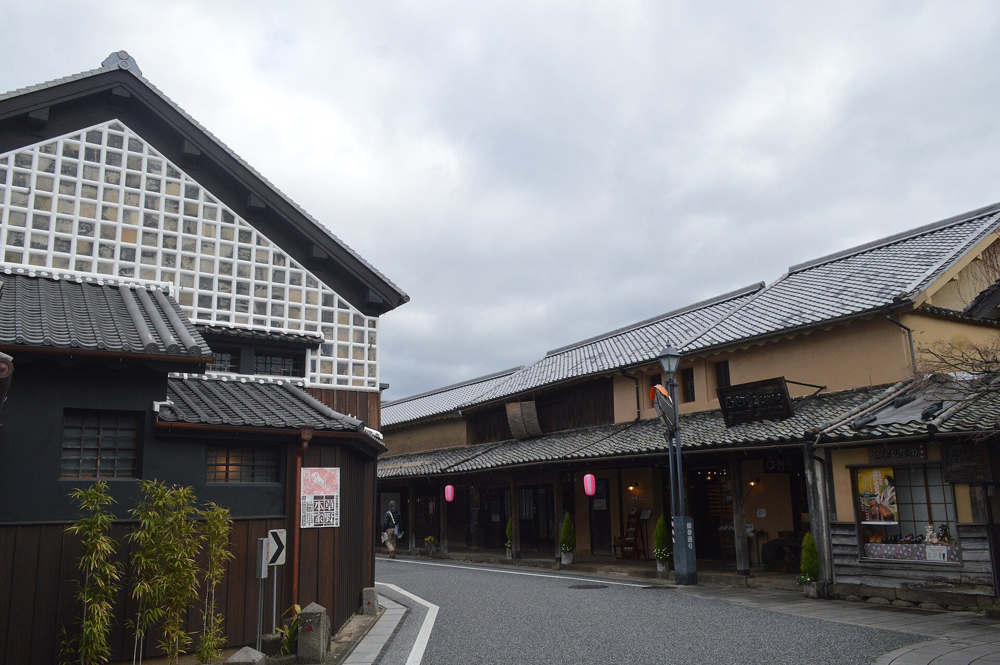
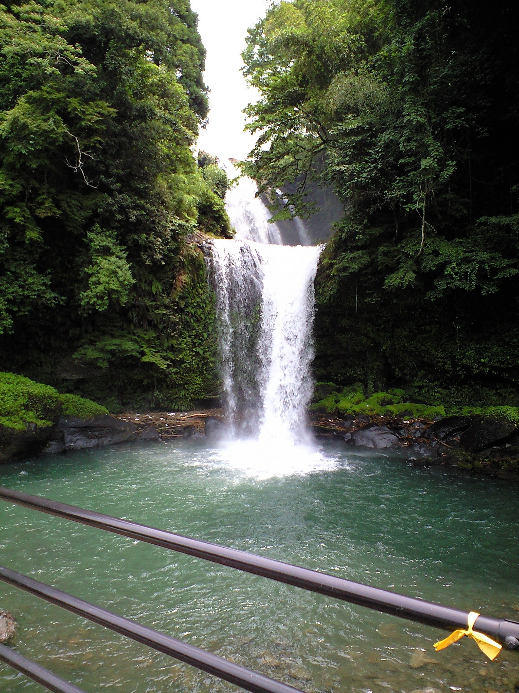

1박 · 3/5
오에도 벳부 후게츠 또는 동급
벳부 온천. 석식 뷔페와 온천욕. 영문 주소는 출발 전 담당자에게 받아 Visit Japan Web에 입력합니다.
히타 · 벳부 · 유후인 · 아소 · 구마모토 · 야나가와 · 다자이후 · 항공·현지 사정에 따라 바뀔 수 있습니다.
| 일자/지역 | 일정 | 식사 |
|---|---|---|
| 1일차 3/5(금) 인천 히타 벳부 |
🏨 오에도 벳부 후게츠 또는 동급 (준4성급) · 북앤바이
|
조 불포함 중 현지식 석 호텔 뷔페 |
| 2일차 3/6(토) 벳부 유후인 아소 |
🏨 아소 카도망 또는 동급 (준4성급) · 북앤바이
|
조 호텔식 중 토반야키 석 호텔 뷔페 |
| 3일차 3/7(일) 구마모토 야나가와 후쿠오카 |
🏨 몬테 에르마나 후쿠오카 또는 동급 (준4성급) · 북앤바이
|
조 호텔식 중 야키니쿠 석 샤브샤브 무제한 |
| 4일차 3/8(월) 후쿠오카 인천 |
|
조 호텔식 중 미즈타키 정식 석 불포함 |
출발 전에 체크하고, QR로 이 가이드북을 스마트폰에서 열어 주세요.
항공권 발권(E-티켓 발행) 완료 후 온라인 체크인. ZE645는 3/4(목) 08:40~3/5(금) 07:10, ZE648은 3/7(일) 15:20~3/8(월) 13:50. 일행 여권을 함께 보여 주면 인접 좌석을 요청할 수 있습니다. 보조배터리는 기내 휴대만 가능하고 위탁·선반 보관·기내 충전은 불가합니다. 1인 2개, 160Wh 초과 불가.
QR을 스캔하면 일정, 동선, 준비물, 연락처를 스마트폰에서 볼 수 있습니다.
https://indadady.github.io/270305_Fukuoka/
10명과 스루가이드 1명 · 5트윈 · 28인승 전용차량 · 면세점 쇼핑 1회
가마도지옥 족욕과 유노하나 재배지를 보고, 유후인 거리와 물안개 긴린코를 둘러봅니다. 1·2일차 호텔에서 온천욕이 있습니다.
마메다마치와 이이치코 증류소, 지온노타키를 지나 다이칸보 전망과 쿠사센리 초원으로 이어집니다.
구마모토성 천수각, 조사이엔, 야나가와 뱃놀이, 다자이후 텐만구를 보고 후쿠오카에서 하카타 타워와 면세점을 들릅니다.
호텔(2인 1실), 전용차량(28인승), 일정 식사, 입장료, 기사·스루가이드, 기사·가이드 팁. 스루가이드 항공료(TAX·유류세)는 여행사 부담입니다.
항공료, TAX 및 유류세, 매너팁, 개인 경비, 여행자보험. 호텔은 북앤바이로, 예약 시점에 따라 동급으로 바뀔 수 있습니다. 쇼핑은 면세점 1회입니다.
항공료는 별도(LAND ONLY)입니다. 편명과 시각은 이번 상품 일정 기준이며, 항공사 사정으로 바뀔 수 있습니다.
가는 편 · 3/5(금)
인천 08:40 → 후쿠오카 10:20
인천공항 제1여객터미널 3층 F카운터. 도착 후 입국을 마치고 스루가이드와 만납니다.
오는 편 · 3/8(월)
후쿠오카 15:20 → 인천 16:30
후쿠오카공항 국제선 3층 K카운터. 일본 출발편도 온라인 체크인이 됩니다.
항공권 발권(E-티켓 발행) 완료 후 이용합니다. 일행 좌석은 온라인 체크인의 무료 좌석과, 공항에서 여권을 함께 보여주는 방법으로 안내합니다.
온라인 체크인에서 남은 일반석 선택 출발 24시간 전 ~ 1시간 30분 전
이스타항공 홈페이지·앱에서 예약번호와 영문 이름으로 조회합니다. 일반석은 무료이고, 앞쪽·비상구 등 일부만 유료입니다. 10명 이상 단체 예약은 개인 온라인 체크인이 열리지 않을 수 있습니다. 그때는 아래 카운터에서 함께 진행하면 됩니다.
가는 편 ZE645 · 인천 3/4(목) 08:40 오픈 ~ 3/5(금) 07:10 마감
공항 카운터는 06:10~07:40, 인천공항 제1여객터미널 3층 F카운터입니다. 위탁 수하물은 07:40까지. 일행 여권을 함께 제시하면 인접 좌석을 요청할 수 있습니다. 스루가이드가 같은 편으로 동행합니다.
오는 편 ZE648 · 후쿠오카 3/7(일) 15:20 오픈 ~ 3/8(월) 13:50 마감
일본 출발은 온라인 체크인이 됩니다. 카운터는 12:50~14:20, 후쿠오카공항 국제선 3층 K카운터입니다. 위탁 수하물은 14:20까지. 허용량은 발권된 운임 기준입니다.
좌석 배정과 수속 시각은 항공사 정책과 당일 공항 사정에 따라 바뀔 수 있습니다.
입국심사와 세관 신고를 미리 적어 두면 후쿠오카 도착 후 대기가 짧아집니다.
3박 참고 주소 · 몬테 에르마나 후쿠오카
Hotel Monte Hermana Fukuoka
3-4-24 Watanabe-dori, Chuo-ku
Fukuoka 810-0004, Japan
TEL 092-735-7111 · 나카스마선 와타나베도리역 2번 출구 도보 약 2분
입국 신고의 숙소는 도착 당일 머무는 곳입니다. 1박 주소는 담당 안내를 우선합니다.
Visit Japan Web차량 구간은 도로를 따라 순서대로 그려집니다. 항공만 점선입니다.
대략 이동
호텔 핀은 안내된 숙소 또는 그 일대입니다. 동급으로 바뀌거나 당일 도로 사정으로 동선이 달라질 수 있습니다. 면세점 위치는 현지 안내를 따릅니다.
모바일(카카오톡 등)에서는
인쇄가 어려울 수 있어요.
다른 브라우저나 PC에서 열어 주세요.
이동 시간은 도로가 막히지 않을 때의 대략 시간입니다.
인천 → 히타 → 아마가세 → 벳부
입국 수속 후 스루가이드와 만나 전용차량으로 이동합니다.
공항에서 약 1시간 20분. 규슈의 작은 교토라고 불리는 옛 상가 거리를 걷습니다.

보리소주로 알려진 증류소를 견학하고 무료 시음이 있습니다.
아마가세까지 약 30분. 이무기가 용이 되어 승천했다는 이야기의 2단 폭포입니다.

약 1시간 이동. 오에도 벳부 후게츠 또는 동급. 호텔 식사 뷔페.
호텔·식사·입장 장소는 현지 사정에 따라 동급으로 바뀔 수 있습니다.
2인 1실 · 준4성급 또는 동급 · 북앤바이. 예약 시점과 현지 사정에 따라 바뀔 수 있습니다.
1박 · 3/5
벳부 온천. 석식 뷔페와 온천욕. 영문 주소는 출발 전 담당자에게 받아 Visit Japan Web에 입력합니다.
2박 · 3/6
구마모토현 아소시 우치노마키 1095-1 일대. 석식 뷔페와 온천욕.
3박 · 3/7
후쿠오카시 주오구 와타나베도리 3-4-24. 나카스마선 와타나베도리역에서 가깝습니다. 석식은 샤브샤브.
3월 초 규슈는 낮에도 쌀쌀합니다. 아소는 후쿠오카보다 더 춥습니다.
--°
불러오는 중
겉옷과 편한 신발을 준비해 주세요. 온천 수건은 호텔 안내를 따릅니다.
식당·온천·이동할 때 화면을 건네면 됩니다.
+81-92-771-0461
후쿠오카시 주오구 지교하마 1-1-3
영사콜센터 24시간
+82-2-3210-0404
이스타항공 고객센터 1544-0080
10명 기준으로 인쇄 일정표 약 80장, 탄소 약 0.38kg, 물 약 750L를 아낄 수 있습니다.
종이
80장
탄소
0.38kg
물
750L
실시간 가이드북 열람
-회